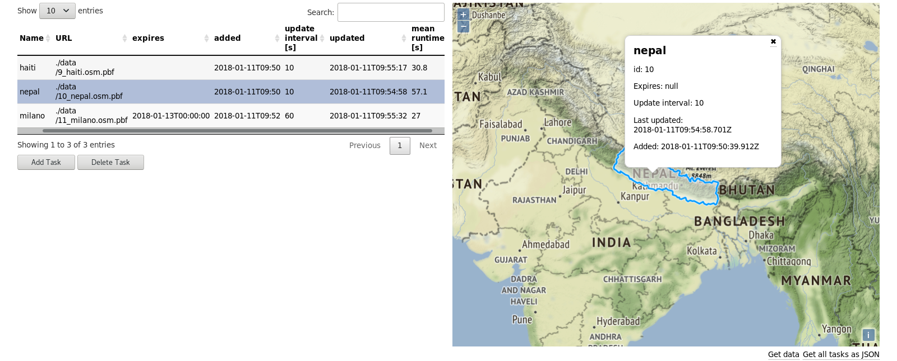

A service providing near real-time OSM extracts.
If you want to use our instance, request an API key at info@heigit.org
Real-time OSM is a server that provides custom OSM extracts and keeps them up-to-date at any interval. If your machine is fast enough, in near real-time. Extraction jobs are managed via a REST API or a web dashboard. The software consists of three components:
The API adds, deletes and requests information about tasks that provide continuously updated region-bound OSM data via a permanent URL.
The backend runs, manages and gathers statistics for tasks.
The frontend allows manipulating tasks and serves the OSM extracts.
Here is a screenshot:
You can look at the code at GitHub or see our instance running live here. If you have any questions, send a mail to info@heigit.org.